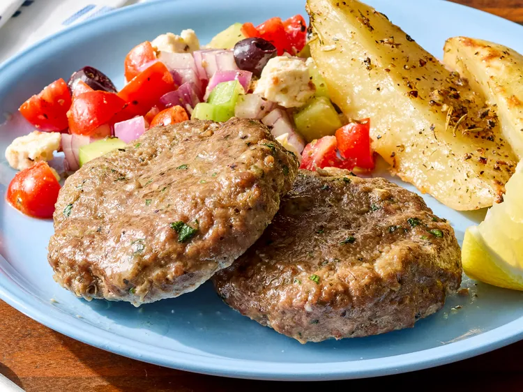

Hamburger

Ingredients
- 1 tablespoon olive oil
- 1 medium red onion, grated
- 3 cloves garlic, minced
- 1 1/2 cups soft bread crumbs, torn from about 2 slices white sandwich bread
- 1/3 cup whole milk
- 2 large eggs, lightly beaten
- 1/4 cup minced fresh parsley
- 1 tablespoon red wine vinegar
- 1 1/2 teaspoons salt
- 1 1/2 teaspoons dried oregano
- 1 teaspoon dried mint
- 1/2 teaspoon freshly ground black pepper
- 2 pounds 90% lean ground beef
- lemon wedges
Directions
- Preheat the oven to 350 degrees F (175 degrees C). Line a rimmed baking sheet with aluminum foil. Heat oil in a large skillet over medium heat. Add onion and cook until tender and starting to brown, 3 minutes.
- Add garlic and cook until fragrant, 1 minute. Remove from skillet and let cool for 5 minutes.
- Combine bread crumbs and milk in a large bowl. Add eggs, parsley, vinegar, salt, oregano, mint, and pepper; stir to combine.
- Add cooled onion mixture and ground beef. Mix just until combined. Do not overmix.
- Shape into 12 (3/4-inch-thick) patties and arrange on the prepared baking sheet.
- Bake in the preheated oven until an instant-read thermometer inserted into the center of a patty registers 160 degrees F (71 degrees C), about 20 minutes.
- Serve warm with lemon wedges and Greek style potatoes or an easy Greek salad.
Home